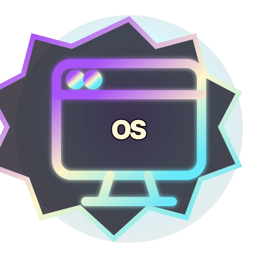

Door 09 · Desktop Adventure
SkyeOS: Desktop Quest
Boot the luxury desktop, open apps, solve terminal/file/browser missions, and unlock the module. This game is part of SkyeArcade: Sovereign Vault, a ten-game browser arcade with local saves, achievements, level packs, bosses, cosmetics, run history, Crown Trials, and PWA install support.
No account requiredLocal progressionDesktop Adventure

Why play SkyeOS: Desktop Quest?
SkyeOS: Desktop Quest gives the vault a dedicated desktop adventure lane. It is built for fast browser play, clear objectives, and return-session progression without a mandatory login wall.
Launch the full SkyeArcade app to play this game, earn achievements, improve local records, test difficulty tiers, unlock cosmetics, and push toward Crown Trial completion.